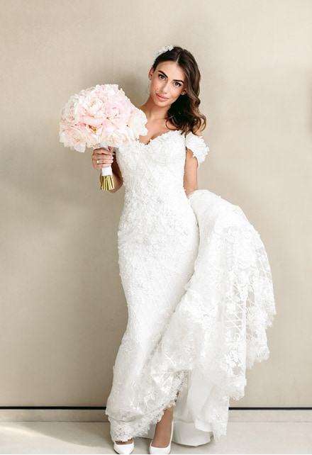
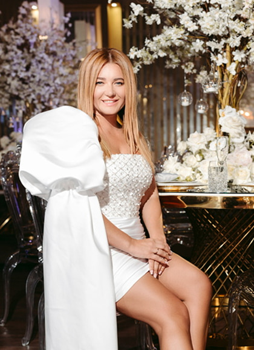

Відвідайте наш інстаграм


Весілля Сергія та Ірини — це приклад того, як повна довіра до команди і чіткий запит клієнта дають результат, який перевищує очікування. Пара прийшла з конкретним баченням: розкішна подія з живою атмосферою, де кожна деталь виправдовує себе. Ми реалізували це в повному обсязі — від концепції простору до фінального акорду живої музики. Флористика, світло, сервірування і музика були зібрані в єдину концепцію, де кожен елемент підсилював загальне враження. Образ Ірини відповідав найвищому рівню події і став одним із найсильніших у нашому портфоліо. Понад сто гостей провели вечір у просторі, який був побудований під них, і це відчувалось у кожній деталі.



Я не знала, що можна так довіритись команді і при цьому отримати саме те, що хотіла. Ми зустрілись один раз, поговорили про відчуття, про те, яким ми бачимо цей день, і з того моменту я більше не турбувалась. Все, що відбувалось далі, було краще, ніж я могла уявити. У день весілля я просто була собою, поруч із Сергієм, оточена людьми, яких люблю, і відчувала, що кожна деталь навколо створена з турботою про нас. Це рідкісне відчуття і я рада, що ми його пережили.



Поділіться з нами своєю мрією і ми допоможемо перетворити її на подію, створену саме для вас. Від ідеї до реалізації — кожне рішення формується навколо ваших цінностей, стилю та настрою.
запланувати консультацію